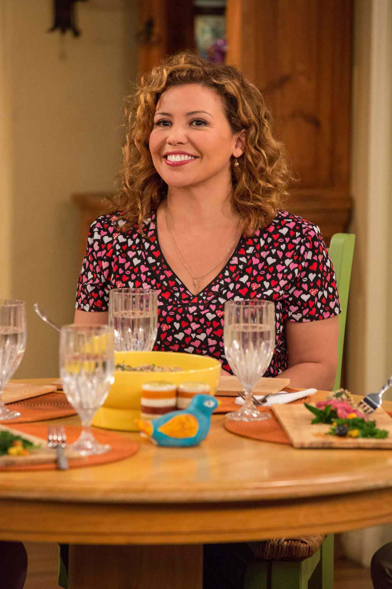
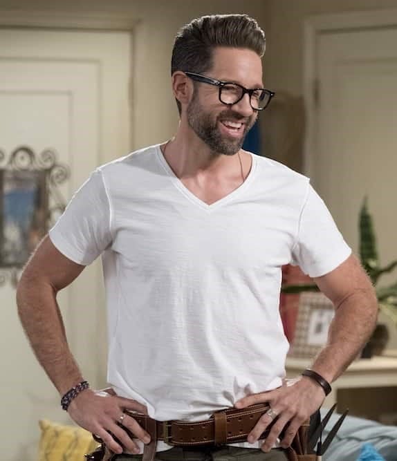
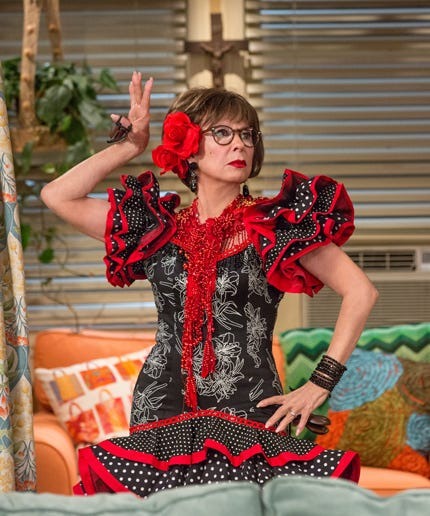
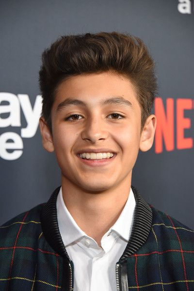

Año de estreno: 2017
País de origen: Estados Unidos
Género(s): Comedia de situación
Nombre de los creadores: Gloria Calderón - Mike Royce
One Day at a Time, es el remake de la clásica serie del mismo nombre producida por Norman Lear en 1975. La trama gira en torno a la vida de una familia cubano-americana y las dificultades que tienen que enfrentar día con día para conseguir un mejor futuro. La familia está encabezada por Penélope Álvarez (Justina Machado), una veterana de guerra recién divorciada, que debe críar a sus dos problemáticos hijos adolescentes: Elena y Alex. Todo esto, mientras busca ajustarse a su nueva vida de soltera en la que, además, debe lidiar con las secuelas mentales en forma de depresiones y estrés post-traumático que su paso por el ejercito le ha dejado.
Pero Penélope no estará sola durante este proceso, ya que cuenta con la ayuda de Lydia, su propia madre, quien la apoya incondicionalmente y que es un fuerte pilar, que mantiene la casa en orden y brinda soporte a sus hijos.
| Nombre | Foto | Descripción |
|---|---|---|
| Penélope (Justina Machado) |  | Es una enfermera veterana de la guerra en Afganistán, cuando regresa del ejército, se enfrenta con problemas para integrarse a su vida de civil. |
| Schneider (Todd Grinnel) |  | Es el vecino de la familia Álvarez. |
| Elena (Isabela Gómez) | Es la hija mayor de Penelope, una joven liberal que constantemente señala algunas de las costumbres machistas de la sociedad y el trato que le da a las mujeres. | |
| Lydia (Rita Moreno) |  | Es la madre de Penelope, en su juventud fue bailarina y maestra de baile. A muy temprana edad emigró de Cuba a los Estados Unidos huyendo del régimen de Fidel Castro. |
| Alex (Marcel Ruiz) |  | El hijo menor de Penelope y hermano menor de Elena, casi siempre se mete en problemas. |